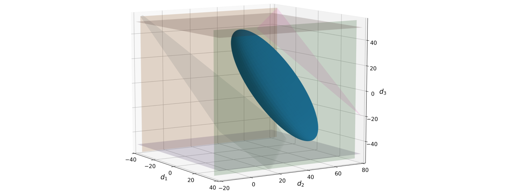

FlexibilityAnalysis.jl
A package for analyzing and quantifying the flexibility of complex systems.

Overview
FlexibilityAnalysis.jl (formerly FlexJuMP.jl) provides a computational framework to analyze and quantify system flexibility. It was originally developed as a JuMP extension to automate the setup and computation of the flexibility index problem with several different types of uncertainty sets. However, it is currently being expanded to compute a number of useful metrics and carry out helpful analyses. Currently, it capabilities include:
- Computing the flexibility index with ellipsoidal, hyperbox, or p-norm uncertainty sets
- Checking nominal point (mean) feasibility
- Computing the stochastic flexibility index via Monte Carlo sampling methods
- Using the flexibility index to expedite the solution to the stochastic flexibility index
- Computing the analytic and feasible centers of the feasible region to better nominal points
- Computing the confidence level which provides a lower bound on the stochastic flexibility index
- Ranking the most limiting system constraints via iterative solution of the flexibility index problem
These techniques are described in greater detail in Background.
Currently, FlexibilityAnalysis only accepts linear constraints and assumes the random variables to be multivariate Gaussian with a certain mean and covariance matrix specified by the user. Development is underway to allow for quadratic constraints and general nonlinear constraints.
Installation
FlexibilityAnalysis.jl is a registered Julia package and can be installed normally.
using Pkg
Pkg.add("FlexibilityAnalysis")The latest version of FlexibilityAnalysis.jl only supports Julia 1.0 and above. A version is still available for use with Julia 0.6 under the julia-0.6 branch in FlexJuMP.jl.
Quick Start
Below is a brief example of the high-level API, more explanation and examples are provided in User Guide and Examples.
using FlexibilityAnalysis, JuMP
using Gurobi
# Setup the uncertainty set parameters
means = [620; 388; 583; 313]
covar = [11.11 0 0 0; 0 11.11 0 0; 0 0 11.11 0; 0 0 0 11.11]
# Setup the model
m = FlexibilityModel(solver = GurobiSolver(OutputFlag = 0))
# Define variables
@randomvariable(m, T[i = 1:4], mean = means[i])
@recoursevariable(m, Qc)
# Define the constraints
@constraint(m, -0.67Qc + T[2] <= 350)
@constraint(m, 0.5Qc - 0.75T[1] - T[2] - T[3] <= -1388.5)
@constraint(m, -Qc + 1.5T[1] + 2T[2] + T[3] >= 2044)
@constraint(m, Qc - 1.5T[1] - 2T[2] - T[3] - 2T[4] <= -2830)
@constraint(m, -Qc + 1.5T[1] + 2T[2] + T[3] + 3T[4] <= 3153)
# Define the uncertainty set
setuncertaintyset(m, :Ellipsoid, covar)
# Solve
status = solve(m)
# Retrieve optimized data
flexibility_index = getflexibilityindex(m)
conf_lvl = getconfidencelevel(m)
critical_temperatures = getvalue(T)
critical_cooling = getvalue(Qc)
actives_constrs = getactiveconstraints(m)
# Print results
print(flexibility_index)3.6003393030116135Outline
- Background
- System Characterization
- Stochastic Flexibility Index Problem
- Flexibility Index Problem
- Uncertainty Set Characterization
- Analysis Techniques
- User Guide
- Examples
- Library
Acknowledgements
We acknowledge our support from the Department of Energy under grant DE-SC0014114.